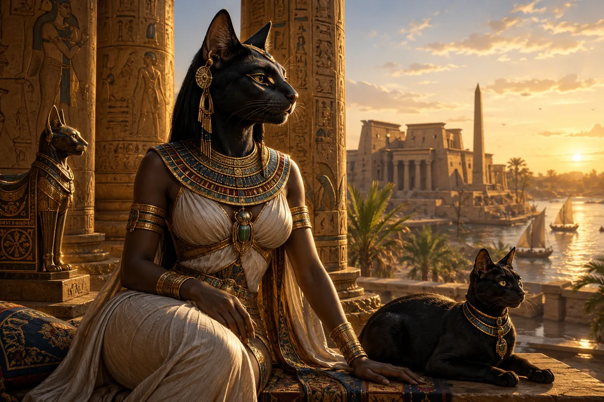
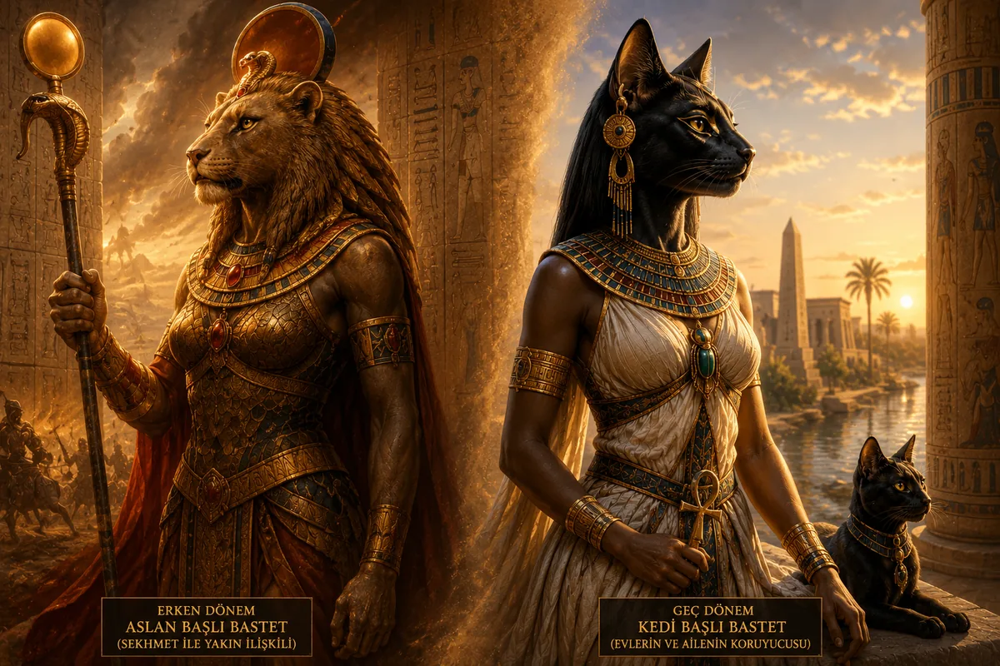
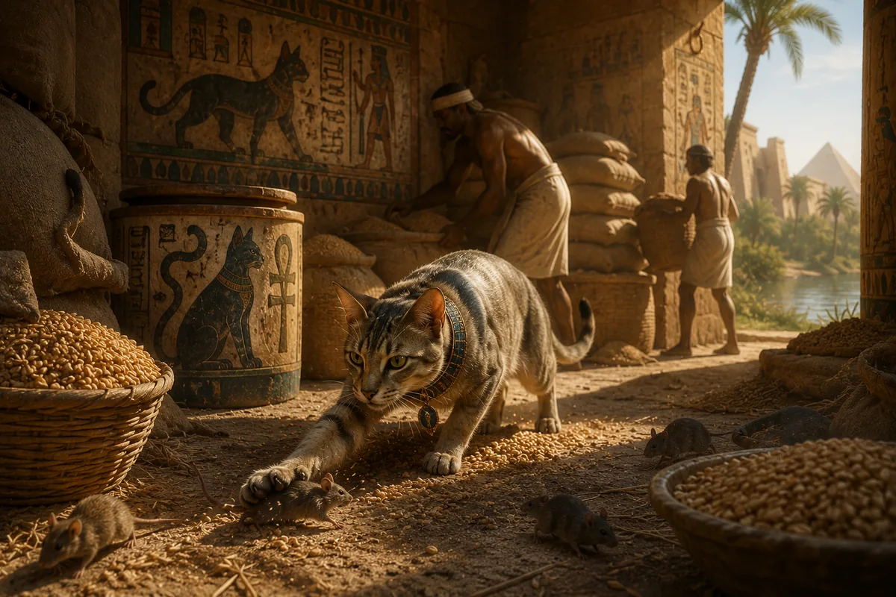
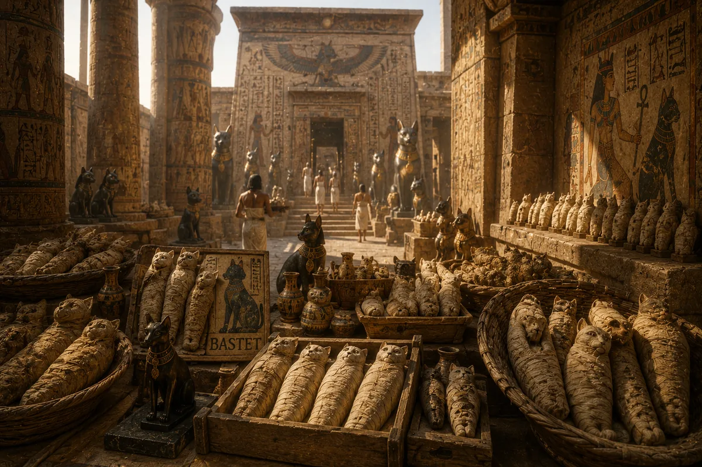
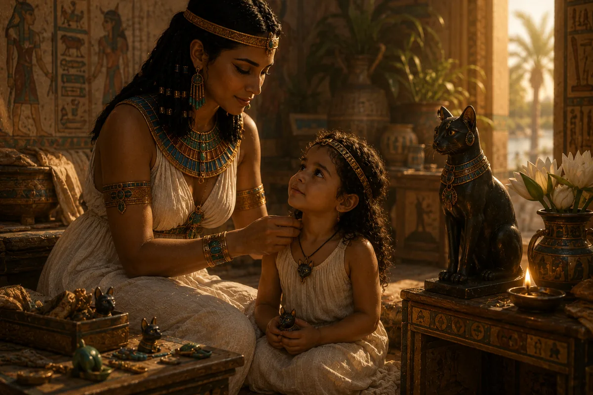
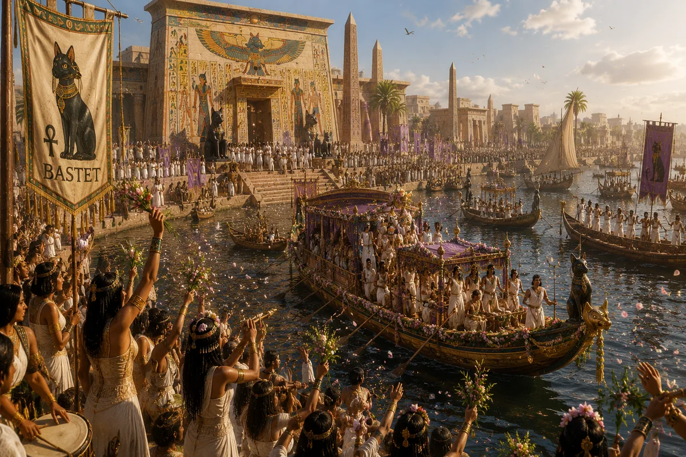
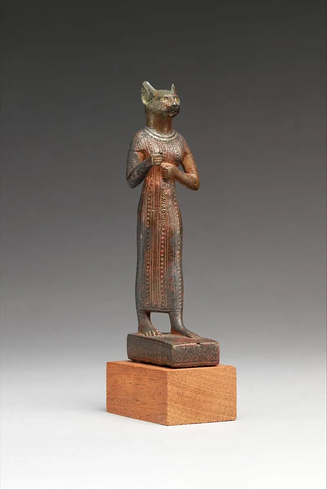
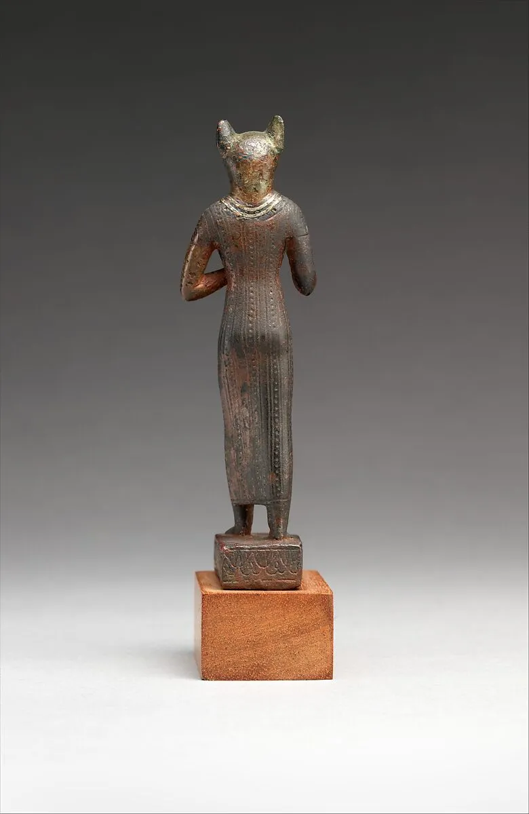

Antik Mısır'da bir kedinin ölümü bazen bir aile için sıradan bir evcil hayvan kaybından çok daha büyük anlam taşıyabiliyordu. Bazı kediler mumyalanıyor, kutsal alanlara gömülüyor ve insanlar onları ilahi korumanın sembolleri olarak görüyordu. Bu durumun arkasında yalnızca hayvan sevgisi yoktu. Antik Mısır'ın en sevilen tanrıçalarından biri olan Bastet'e duyulan derin saygı vardı.
Bugün Bastet çoğu zaman yalnızca "kedi tanrıça" olarak tanıtılır. Ancak bu tanım, onun Antik Mısır'daki gerçek önemini açıklamak için yeterli değildir. Bastet yalnızca kedilerle ilişkilendirilen bir tanrıça değil; aynı zamanda korumanın, anneliğin, bereketin, kadınlığın, ev yaşamının ve günlük huzurun ilahi temsilcilerinden biridir.
Onun hikâyesini ilginç kılan şey, Antik Mısır'ın büyük tanrılarından farklı olarak insanların günlük yaşamına doğrudan dokunmasıdır. Ra gökyüzünü yönetiyordu. Osiris ölümden sonraki yaşamın hükümdarıydı. Horus krallığın koruyucusuydu. Bastet ise insanların evlerinde hissediliyordu. Çocuklarını korumak isteyen anneler, ailelerinin güvenliği için dua eden insanlar ve evlerini kötülüklerden uzak tutmak isteyen Mısırlılar ona yöneliyordu.
Bu nedenle Bastet'in kültü yalnızca tapınak duvarları arasında kalmadı. Evlerde kullanılan muskaların üzerinde, günlük eşyalarda, küçük heykellerde ve aile yaşamının birçok alanında kendine yer buldu. Antik Mısır'da çok az tanrıça halkın gündelik hayatına onun kadar yaklaşabilmiştir.
Ancak Bastet'in hikâyesi yalnızca koruyucu bir anne figüründen ibaret değildir. Onun geçmişine bakıldığında bambaşka bir yüz ortaya çıkar. İlk dönemlerde Bastet günümüzde bildiğimiz zarif ev kedisinden çok, vahşi bir aslanı andıran güçlü bir savaş tanrıçası olarak görülüyordu. Yüzyıllar boyunca değişen dini anlayışlar onun karakterini dönüştürdü ve sonunda Antik Mısır'ın en sevilen koruyucu tanrıçalarından biri hâline getirdi.
Peki Bastet kimdi? Mısırlılar kedilere neden bu kadar büyük değer veriyordu? Bastet'in Sekhmet ile ilişkisi neydi? Ve nasıl oldu da bir tanrıça, sıradan insanların hayatında firavunların bile saygı duyduğu kadar güçlü bir yer edindi?
Bu soruların cevapları bizi Antik Mısır'ın yalnızca tanrılar dünyasına değil, aynı zamanda günlük yaşamına da götürüyor.
Bastet Kimdir?
Bastet, Antik Mısır dininde koruma, ev yaşamı, doğurganlık, annelik, kadınlık ve bereketle ilişkilendirilen önemli bir tanrıçadır. Günümüzde en çok kedilerle olan bağlantısıyla tanınsa da, tarih boyunca üstlendiği roller bundan çok daha geniştir.
Mısır sanatında Bastet çoğu zaman kedi başlı bir kadın olarak tasvir edilir. Ancak bu görünüm onun tarihinin yalnızca son bölümünü temsil eder. Erken dönemlerde Bastet daha çok aslan özellikleri taşıyan güçlü ve savaşçı bir tanrıça olarak görülüyordu. Bu durum, onun zaman içinde nasıl değiştiğini anlamak açısından önemlidir.
Mısırlılar için kediler son derece özel hayvanlardı. Sessiz hareket ediyor, zararlı kemirgenleri avlıyor ve yavrularını büyük bir kararlılıkla koruyorlardı. Bastet'in doğası da bu özelliklerle ilişkilendirilmiştir. O hem şefkatli hem koruyucu, hem sakin hem de gerektiğinde son derece güçlü olabilen bir tanrıça olarak düşünülüyordu.
Bu nedenle Bastet'in temsil ettiği koruma anlayışı yalnızca fiziksel güvenlikle sınırlı değildi. O aynı zamanda aile düzeninin, ev huzurunun ve günlük yaşamın devamlılığının koruyucusu olarak görülüyordu. Antik Mısır'da insanların en çok ihtiyaç duyduğu şeylerden biri de buydu.
Bastet'in halk arasında gördüğü sevgi büyük ölçüde buradan kaynaklanır. Çünkü o, insanların dokunabildiği korkulara ve umutlara hitap ediyordu. Bir çocuğun sağlığı, bir ailenin güvenliği ya da bir evin huzuru gibi konular Mısırlılar için son derece önemliydi ve Bastet bütün bu alanların koruyucu gücü olarak kabul ediliyordu.
Bastet'in Kökeni ve Zaman İçindeki Değişimi

Bastet'in Antik Mısır tarihindeki yolculuğu, onu diğer birçok tanrıçadan ayıran en ilginç özelliklerden biridir. Çünkü Bastet'in kimliği yüzyıllar boyunca büyük bir dönüşüm geçirmiştir. Günümüzde onu zarif bir kedi tanrıça olarak tanıyor olsak da, Mısır'ın erken dönemlerinde durum oldukça farklıydı.
İlk dönem kaynakları incelendiğinde Bastet'in daha çok savaşçı ve koruyucu özellikleriyle öne çıktığı görülür. Bu dönemde Mısır'ın siyasi yapısı henüz tam anlamıyla oturmamıştı ve devletin varlığını korumak büyük önem taşıyordu. Bu nedenle birçok tanrı ve tanrıça gibi Bastet de güçlü ve tehditkâr yönleriyle tasvir edilmiştir.
Bazı araştırmacılar, Bastet'in ilk dönemlerde aslan özellikleri taşıyan bir güneş tanrıçası olarak görüldüğünü düşünmektedir. Bu durum onu Sekhmet gibi daha sert karakterli tanrıçalarla yakınlaştırmaktadır. Ancak zaman ilerledikçe Mısır toplumunun dini anlayışı değişmiş, Bastet'in koruyucu yönü ön plana çıkmaya başlamıştır.
Bu dönüşüm tesadüf değildir.
Aslan, gücün ve saldırganlığın sembolüydü. Ev kedisi ise koruma, dikkat ve aile yaşamıyla ilişkilendiriliyordu. Bastet'in zaman içinde aslandan kediye doğru sembolik bir dönüşüm geçirmesi, Mısırlıların onu nasıl algıladığının da değiştiğini gösterir.
Bu süreç sonunda Bastet, savaş alanlarının tanrıçasından çok evlerin ve ailelerin koruyucusu olarak görülmeye başlanmıştır. Ancak eski gücünü hiçbir zaman tamamen kaybetmemiştir. Koruyucu doğasının arkasında hâlâ gerektiğinde ortaya çıkabilecek bir güç bulunduğuna inanılıyordu.
Bu nedenle Bastet'in tarihini anlamak, yalnızca bir tanrıçanın hikâyesini değil, Antik Mısır toplumunun değişen düşünce yapısını da anlamak anlamına gelir.
Mısırlılar Kedilere Neden Bu Kadar Büyük Değer Veriyordu?

Günümüzde kedilerin internette milyonlarca insan tarafından sevilmesi sıradan bir durum gibi görünebilir. Ancak Antik Mısır'da kedilere duyulan saygının arkasında yalnızca sevgi yoktu. Bu hayvanlar toplumun günlük yaşamında son derece önemli bir rol oynuyordu.
Nil Vadisi'nde tarım hayatın merkezindeydi. Hasat edilen tahıllar büyük depolarda saklanıyordu ve bu depoların korunması toplumun hayatta kalması açısından kritik öneme sahipti. Ancak fareler ve diğer kemirgenler sürekli bir tehdit oluşturuyordu.
Kediler bu noktada doğal koruyucular hâline geldi.
Kemirgenleri avlayarak tahıl stoklarını koruyor, böylece insanların yiyecek kaynaklarının zarar görmesini engelliyorlardı. Ayrıca yılanlarla mücadelede de etkiliydiler. Bu nedenle bir kedinin varlığı yalnızca rahatlık değil, güvenlik anlamına da geliyordu.
Zamanla insanlar kedilerin davranışlarını dikkatle gözlemlemeye başladı. Sessiz hareket etmeleri, karanlıkta görebilmeleri, hızlı refleksleri ve yavrularını koruma konusundaki kararlılıkları büyük hayranlık uyandırıyordu.
Bu özellikler Bastet'in karakteriyle birleştiğinde ortaya güçlü bir sembol çıktı.
Kedi artık yalnızca bir hayvan değildi.
Korumanın, dikkatin ve aileyi savunmanın sembolü hâline gelmişti.
İşte bu nedenle Mısır'da kedilere verilen değer, birçok başka uygarlıkta görülmeyen bir seviyeye ulaştı.
Kedi Mumyaları ve Bastet Kültünün Büyüklüğü

Bastet kültünün ne kadar yaygın olduğunu gösteren en etkileyici kanıtlardan biri, günümüze ulaşan kedi mumyalarıdır.
Arkeologlar Mısır'ın çeşitli bölgelerinde yüz binlerce, hatta bazı tahminlere göre milyonlarca kedi mumyasına ulaşmıştır. Özellikle Bastet kültünün merkezi olan Bubastis çevresinde bulunan bulgular, bu tanrıçaya duyulan saygının boyutlarını ortaya koymaktadır.
İlk bakışta bu durum garip gelebilir. Ancak Mısırlılar için mumyalama yalnızca insanlar için uygulanan bir işlem değildi. Kutsal kabul edilen bazı hayvanlar da mumyalanabiliyordu.
Bu uygulamanın farklı nedenleri vardı.
Bazı kediler ailelerin sevdiği hayvanlardı ve öldüklerinde özel işlemlerden geçirilerek gömülüyorlardı. Bazıları ise doğrudan Bastet'e adak olarak sunuluyordu. Tapınaklara gelen insanlar tanrıçanın korumasını kazanmak ya da ona teşekkür etmek amacıyla bu tür adaklarda bulunabiliyordu.
Bu durum aynı zamanda Bastet kültünün ekonomik ve toplumsal gücünü de göstermektedir. Çünkü milyonlarca hayvanın yetiştirilmesi, mumyalanması ve dini törenlerde kullanılması büyük bir organizasyon gerektiriyordu.
Dolayısıyla Bastet kültü yalnızca dini bir hareket değil, aynı zamanda Antik Mısır'ın sosyal ve ekonomik yaşamında da önemli bir yere sahipti.
Bastet ve Halk Dini
Antik Mısır'da bazı tanrılar daha çok devlet ideolojisiyle ilişkilendirilirdi. Ra, Horus veya Amon gibi figürler firavunların meşruiyetinde önemli rol oynuyordu. Bastet ise farklı bir yere sahipti.
Onun gücü büyük ölçüde halktan geliyordu.
Sıradan insanlar Bastet'i kendilerine yakın hissediyordu. Çünkü temsil ettiği şeyler günlük hayatın içindeydi. Bir annenin çocuğunu koruma isteği, bir ailenin huzurlu yaşama arzusu ya da insanların görünmeyen tehlikelerden korunma ihtiyacı Bastet'in alanına giriyordu.
Bu nedenle Bastet kültü toplumun her katmanına yayılmıştı.
Köylülerden tüccarlara, zanaatkârlardan yöneticilere kadar birçok kişi onun koruyucu gücüne inanıyordu.
Mısır'ın büyük tanrıları gökyüzünü, güneşi ya da ölümden sonraki yaşamı yönetiyor olabilirlerdi. Ancak Bastet insanların yaşadığı evleri, kurduğu aileleri ve sürdürmeye çalıştığı günlük hayatı temsil ediyordu.
Belki de onu bu kadar sevilen bir tanrıça hâline getiren şey tam olarak buydu.
Çünkü Bastet, insanların dokunabildiği korkulara ve umutlara hitap ediyordu.
Bastet ve Kadınların Yaşamındaki Yeri

Bastet'in Antik Mısır toplumunda bu kadar sevilmesinin nedenlerinden biri, insanların hayatında somut karşılığı olan konularla ilişkilendirilmesiydi. Bu durum özellikle kadınların yaşamında daha belirgin şekilde görülür. Doğum, annelik, çocukların korunması ve aile düzeninin sürdürülmesi gibi konular Antik Mısır'da yalnızca bireysel meseleler değil, toplumun devamlılığı açısından da büyük önem taşıyordu. Bastet bu alanların ilahi koruyucularından biri olarak kabul ediliyordu.
Mısırlılar için bir çocuğun dünyaya gelmesi yalnızca biyolojik bir olay değildi. Doğum hem fiziksel hem de ruhsal tehlikeler barındıran hassas bir süreç olarak görülüyordu. Bu nedenle kadınlar çeşitli tanrı ve tanrıçalardan yardım isterdi. Bastet de özellikle anneleri ve çocukları koruyan figürlerden biri hâline gelmişti. Onun adına yapılan dualar, taşınan muskalar ve kullanılan küçük figürler bu inancın günlük yaşamdaki yansımalarıydı.
Ancak Bastet'in kadınlarla ilişkisi yalnızca annelik üzerinden açıklanamaz. O aynı zamanda bağımsızlık ve öz güven gibi özelliklerle de ilişkilendiriliyordu. Kedilerin doğasında görülen sakinlik, dikkat ve gerektiğinde ortaya çıkan kararlılık, Bastet'in karakterinde de kendine yer bulmuştu. Bu nedenle o yalnızca koruyan bir anne değil, aynı zamanda güçlü ve kendi iradesine sahip bir tanrıça olarak görülüyordu.
Bu yönüyle Bastet, Antik Mısır'ın kadın figürleri arasında özel bir yere sahiptir. İsis bilgelik ve fedakârlığıyla öne çıkarken, Hathor yaşam sevinci ve bereketle ilişkilendirilir. Bastet ise gündelik yaşamın içinde hissedilen koruma ve güven duygusunu temsil eder. Bu durum onun halk arasında neden bu kadar geniş bir kabul gördüğünü anlamamıza yardımcı olur.
Bastet Festivalleri ve Antik Dünyanın En Büyük Kutlamalarından Biri

Bastet kültünün gücünü gösteren en önemli unsurlardan biri, onun adına düzenlenen festivallerdir. Antik kaynaklar arasında özellikle Herodotos'un aktardıkları dikkat çekicidir. MÖ 5. yüzyılda Mısır'ı gezen Herodotos, Bastet adına yapılan kutlamaların ülkenin en büyük dini etkinliklerinden biri olduğunu anlatır.
Bu festivaller sırasında binlerce insan Bubastis'e doğru yola çıkıyordu. Nil Nehri boyunca ilerleyen teknelerde müzik çalınıyor, şarkılar söyleniyor ve insanlar tanrıçayı onurlandıran kutlamalara katılıyordu. Herodotos'un anlattıklarına göre bu törenler yalnızca dini ritüellerden ibaret değildi; aynı zamanda büyük toplumsal buluşmalardı.
Bu durum Bastet'in halk üzerindeki etkisini anlamak açısından son derece önemlidir. Çünkü Antik Mısır'da her tanrı bu ölçekte bir halk desteğine sahip değildi. Bazı kültler daha çok rahipler ve devlet tarafından desteklenirken, Bastet kültü doğrudan halkın katılımıyla güç kazanmıştı.
Kutlamaların merkezinde yalnızca ibadet yoktu. Müzik, dans ve toplu şölenler de önemli yer tutuyordu. Bu durum ilk bakışta Hathor kültünü hatırlatabilir. Gerçekten de iki tanrıça arasında bu açıdan bazı benzerlikler bulunmaktadır. Ancak Bastet festivallerinde öne çıkan tema yaşam sevincinden çok koruma ve toplumsal birlik duygusuydu.
Bubastis'te yapılan kutlamalar, Bastet'in yalnızca dini bir figür olmadığını gösterir. O aynı zamanda insanların ortak kimliğinin ve toplumsal dayanışmasının da sembollerinden biri hâline gelmiştir.
Bastet ve Ölümden Sonraki Yaşam İnancı
Bastet çoğu zaman ev yaşamı ve korumayla ilişkilendirilse de, onun etkisi yalnızca yaşayanların dünyasıyla sınırlı değildi. Antik Mısır'da ölüm ile yaşam arasında kesin bir ayrım yapılmıyordu. İnsan öldükten sonra da varlığını sürdürmeye devam ediyor ve uzun bir yolculuğa çıkıyordu. Bu nedenle koruyucu tanrıların etkisi ölümden sonra da devam edebiliyordu.
Bazı mezar objelerinde ve dini metinlerde Bastet'in koruyucu özelliklerine gönderme yapıldığı görülmektedir. İnsanlar yalnızca yaşamları boyunca değil, ölümden sonraki yolculuklarında da ilahi korumaya ihtiyaç duyduklarına inanıyordu. Bastet'in kötülükleri uzaklaştıran doğası bu noktada önem kazanıyordu.
Elbette ölümden sonraki yaşamın merkezinde Osiris, Anubis ve Thoth gibi figürler bulunuyordu. Ancak Bastet'in koruyucu karakteri onu bu dünyanın tamamen dışında bırakmaz. Mısırlılar için koruma ihtiyacı yalnızca bir döneme ait değildi. Yaşamın her aşamasında gerekliydi.
Bu nedenle Bastet'in etkisi evlerin duvarlarıyla sınırlı kalmamış, insanların sonsuzluk hakkındaki düşüncelerine kadar uzanmıştır. Onun koruyucu doğası, Mısır dininin farklı katmanlarına nüfuz eden geniş bir etki alanı oluşturmuştur.
Bastet'in hikâyesi bu açıdan dikkat çekicidir. Çünkü o ne yalnızca savaşçı bir tanrıçadır ne de yalnızca evlerin koruyucusudur. Yüzyıllar boyunca değişmiş, farklı roller üstlenmiş ve sonunda Antik Mısır'ın en sevilen tanrısal figürlerinden biri hâline gelmiştir. Tam da bu nedenle Bastet'i anlamak, yalnızca bir tanrıçayı değil, Antik Mısır insanının korkularını, umutlarını ve günlük yaşamını anlamak anlamına gelir.
Bastet Hakkında Yaygın Yanlış Bilgiler
Bastet'in günümüzde bu kadar tanınır hâle gelmesi, onun hakkında birçok yanlış bilginin de yayılmasına neden olmuştur. Özellikle internet içeriklerinde ve popüler kültürde Bastet çoğu zaman tarihsel bağlamından koparılarak yalnızca gizemli bir kedi tanrıça olarak sunulur. Oysa Antik Mısır kaynakları çok daha karmaşık ve ilgi çekici bir tablo ortaya koymaktadır.
En yaygın yanlışlardan biri, Bastet'in yalnızca kedilerin tanrıçası olduğu düşüncesidir. Kediler onun en önemli sembollerinden biridir ancak Bastet'in etki alanı bununla sınırlı değildir. Koruma, doğurganlık, annelik, aile yaşamı, kadınlık ve günlük huzur gibi kavramlar da onunla ilişkilendirilmiştir. Mısırlılar Bastet'i yalnızca hayvanlarla bağlantılı bir figür olarak değil, yaşamın korunmasını sağlayan ilahi bir güç olarak görüyordu.
Bir diğer yaygın yanlış bilgi, Mısırlıların kedilere doğrudan tapındığı yönündedir. Bu düşünce modern dünyada sıkça tekrar edilse de gerçeği tam olarak yansıtmaz. Antik Mısırlılar kedilere büyük saygı duyuyordu ancak bu saygının nedeni kedilerin tanrı olması değildi. Kediler, Bastet'in koruyucu özelliklerini temsil eden kutsal semboller olarak görülüyordu. Saygı duyulan şey hayvanın kendisinden çok, onun temsil ettiği ilahi anlamdı.
Bastet'in her zaman sakin ve yumuşak bir tanrıça olduğu düşüncesi de doğru değildir. Onun tarihine bakıldığında daha eski dönemlerde çok daha sert ve savaşçı özellikler taşıdığı görülür. Bu durum, Bastet'in yüzyıllar boyunca değişen bir karaktere sahip olduğunu gösterir. Koruyuculuğu ön plana çıkmış olsa da, bu korumanın arkasında gerektiğinde ortaya çıkabilecek güçlü bir taraf bulunduğuna inanılıyordu.
Bazı modern yorumlar Bastet'i yalnızca kadınlarla ilgili bir tanrıça gibi göstermektedir. Oysa Bastet'in koruması bütün aileyi kapsıyordu. Erkekler, kadınlar ve çocuklar onun koruyucu gücüne başvurabiliyor, evlerinin güvenliği için ona dua edebiliyordu. Bu nedenle Bastet kültü toplumun çok geniş bir kesimine yayılmıştır.
Bu yanlış anlamalar giderildiğinde Bastet'in gerçek kimliği daha net ortaya çıkar. O yalnızca kedilerle ilişkilendirilen sevimli bir figür değil; Antik Mısır'ın günlük yaşamında güvenliği, huzuru ve korumayı temsil eden önemli bir tanrıçadır.
Bastet'in Günümüzdeki Mirası


Antik Mısır'dan kalma bronz Bastet heykeli. Metropolitan Museum of Art koleksiyonunda sergilenmektedir.
Antik Mısır tanrılarının büyük bölümü günümüzde tarih kitaplarında ve müze vitrinlerinde yaşamaya devam etmektedir. Bastet ise bunların arasında özel bir yere sahiptir. Çünkü onun sembolü olan kedi, günümüzde de insanların hayatında önemli bir yer tutmaktadır. Bu durum Bastet'in binlerce yıl sonra bile kolayca hatırlanmasını sağlamıştır.
Arkeolojik kazılarda ortaya çıkarılan Bastet heykelleri, bronz kedi figürleri ve kedi mumyaları dünyanın birçok müzesinde sergilenmektedir. Bu eserler yalnızca sanatsal açıdan değil, Antik Mısır'ın günlük yaşamını anlamak açısından da büyük önem taşır. Çünkü Bastet'in hikâyesi saraylardan çok evlere, krallardan çok sıradan insanlara yaklaşır.
Bugün Bastet'in adı filmlerde, romanlarda ve video oyunlarında sıkça karşımıza çıkar. Ancak bu eserlerin önemli bir kısmı onun yalnızca gizemli yönüne odaklanır. Tarihsel Bastet ise bundan çok daha kapsamlıdır. O, insanların güvenlik arayışını, ailelerini koruma isteğini ve yaşamlarını huzur içinde sürdürme çabasını temsil eder.
Modern insanın Bastet'e ilgi duymasının sebeplerinden biri de budur. Çünkü temsil ettiği değerler zamanla değişmemiştir. İnsanlar bugün de sevdiklerini korumak, güvenli bir yaşam sürmek ve huzurlu bir ev ortamı oluşturmak ister. Bastet'in sembolize ettiği koruyucu güç bu nedenle hâlâ anlam taşımaktadır.
Onun hikâyesi aynı zamanda Antik Mısır'ın yalnızca piramitlerden, firavunlardan ve savaşlardan ibaret olmadığını da gösterir. Bu uygarlık aynı zamanda aile hayatına, günlük yaşama ve insanların kişisel mutluluğuna da önem veriyordu. Bastet, bu dünyanın en güçlü sembollerinden biridir.
Sonuç: Bastet Neden Antik Mısır'ın En Sevilen Tanrıçalarından Biriydi?
Antik Mısır'ın sayısız tanrı ve tanrıçası arasında Bastet'in ayrıcalıklı bir yere sahip olması tesadüf değildir. Onun temsil ettiği kavramlar, insanların günlük yaşamında doğrudan karşılık bulan değerlerdi. Koruma, güvenlik, aile, annelik ve huzur gibi konular her dönemde insanların en temel ihtiyaçları arasında yer almıştır.
Ra evrenin düzenini temsil ediyor, Osiris ölümden sonraki yaşamı yönetiyor ve Horus krallığın ilahi meşruiyetini koruyordu. Bastet ise insanların yaşadığı dünyaya daha yakındı. Evlerde hissedilen koruma duygusu, çocukların güvenliği ve ailelerin huzuru onun etki alanına giriyordu. Bu nedenle halk arasında gördüğü sevgi son derece güçlüydü.
Bastet'in tarih boyunca geçirdiği dönüşüm de onu benzersiz kılar. Erken dönemlerin daha sert ve savaşçı figüründen, evlerin koruyucusu olan kedi tanrıçaya dönüşmesi Mısır dininin değişen yapısını gözler önüne serer. Ancak bu değişim sırasında özünde bulunan koruyucu karakter hiçbir zaman kaybolmamıştır.
Belki de Bastet'in kalıcılığının sırrı burada yatmaktadır. O yalnızca güçlü bir tanrıça değil, insanların kendilerini güvende hissetme ihtiyacının sembolüdür. Binlerce yıl önce Nil kıyılarında yaşayan insanlar için de, bugün onun hikâyesini okuyan insanlar için de bu ihtiyaç değişmemiştir.
Bu nedenle Bastet yalnızca Antik Mısır'ın kedi tanrıçası olarak değil, korumanın, huzurun ve aile yaşamının en güçlü sembollerinden biri olarak hatırlanmaya devam etmektedir.
Sık Sorulan Sorular
Bastet ne tanrıçasıdır?
Bastet; koruma, ev yaşamı, annelik, doğurganlık, aile ve kedilerle ilişkilendirilen önemli bir Antik Mısır tanrıçasıdır.
Bastet neden kedi başlı olarak tasvir edilir?
Kediler Antik Mısır'da koruma, dikkat, çeviklik ve annelik özellikleriyle ilişkilendiriliyordu. Bu nedenle Bastet'in sembolü hâline gelmişlerdir.
Mısırlılar gerçekten kedilere tapıyor muydu?
Hayır. Mısırlılar kedilere büyük saygı duyuyordu ancak tapındıkları şey kedilerin kendisi değil, onların temsil ettiği ilahi güçtü.
Bastet ve Sekhmet arasındaki fark nedir?
Sekhmet daha çok savaş, güneşin yakıcı gücü ve yıkımla ilişkilendirilirken; Bastet koruma, aile yaşamı ve günlük huzurla ilişkilendirilmiştir. Bazı dönemlerde aynı ilahi gücün farklı yönleri olarak yorumlanmışlardır.
Bastet'in en önemli kült merkezi neresidir?
Bastet'in en önemli kült merkezi Bubastis şehridir. Antik dünyanın en büyük dini festivallerinden bazıları burada düzenlenmiştir.
Bastet'in kutsal hayvanı nedir?
Bastet'in kutsal hayvanı kedidir. Özellikle ev kedileri onun sembolü olarak kabul edilmiştir.
Bastet neden bu kadar popülerdi?
Çünkü insanların günlük yaşamında önemli olan koruma, aile ve huzur gibi kavramlarla ilişkilendiriliyordu. Bu durum onu halk arasında son derece sevilen bir tanrıça hâline getirmiştir.
Bastet günümüzde neden hâlâ ilgi çekmektedir?
Kedilerle olan bağlantısı ve temsil ettiği evrensel değerler nedeniyle Bastet günümüzde de tarih ve mitoloji meraklılarının ilgisini çekmeye devam etmektedir.
Kaynakça
- Pinch, Geraldine. Egyptian Mythology: A Guide to the Gods, Goddesses, and Traditions of Ancient Egypt. Oxford University Press, 2004.
- Wilkinson, Richard H. The Complete Gods and Goddesses of Ancient Egypt. Thames & Hudson, 2003.
- Hart, George. The Routledge Dictionary of Egyptian Gods and Goddesses. Routledge, 2005.
- Assmann, Jan. The Search for God in Ancient Egypt. Cornell University Press, 2001.
- Teeter, Emily. Religion and Ritual in Ancient Egypt. Cambridge University Press, 2011.
- Lesko, Barbara S. The Great Goddesses of Egypt. University of Oklahoma Press, 1999.
- Hornung, Erik. Conceptions of God in Ancient Egypt: The One and the Many. Cornell University Press, 1996.
- Lichtheim, Miriam. Ancient Egyptian Literature. University of California Press.
- British Museum – Ancient Egyptian Religion Collection.
- The Metropolitan Museum of Art – Egyptian Art Collection.
- University College London (UCL) – Digital Egypt for Universities Project.
- Griffith Institute, Oxford – Ancient Egyptian Religious Texts Archive.